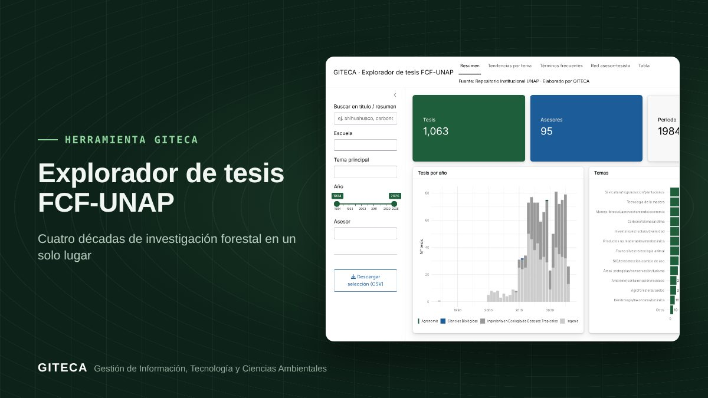

1 063 tesis forestales de la UNAP, a un buscador de distancia
Busca y filtra las tesis de la Facultad de Ciencias Forestales (1984–2026) por tema, año, escuela y asesor, y descubre tendencias y redes de investigación.
Abrir la app ↗Gratis. Usa metadatos públicos del Repositorio Institucional de la UNAP.

¿Qué se ha investigado sobre tu especie o tu zona en la Facultad de Ciencias Forestales de la UNAP?
El repositorio de la UNAP guarda más de mil tesis forestales, pero revisarlas una por una toma mucho tiempo. El Explorador reúne sus metadatos en un buscador con filtros, gráficos y descarga, para encontrar antecedentes en minutos.
Antes y ahora
El proceso de siempre
- Buscar en el repositorio con palabras clave, página por página.
- Copiar títulos y enlaces a una hoja de cálculo.
- Contar a mano cuántas tesis hay por tema, año o asesor.
Con la herramienta
- Escribes una palabra (por ejemplo, «shihuahuaco»).
- Filtras por escuela, tema, año y asesor.
- Ves las tendencias, los términos frecuentes y la red asesor–tesista.
- Descargas la selección en CSV, con el enlace a cada tesis.
Tiempos de referencia estimados por el equipo GITECA; varían según el tamaño del área y la experiencia del usuario.
En la práctica: La base reúne 1 063 tesis y 95 asesores, de 1984 a 2026.
Qué hace
- Buscador por título y resumen, con filtros por escuela, tema, año y asesor.
- Tesis por año y por tema.
- Términos frecuentes y red asesor–tesista.
- Descarga de la selección en CSV.
Para quién es
Empieza en 3 pasos
- Abre la app (la primera carga tarda 1 a 2 minutos).
- Busca o filtra.
- Descarga tu selección y ve a cada tesis desde su enlace.
Explorador de tesis FCF-UNAPGratis. Usa metadatos públicos del Repositorio Institucional de la UNAP.
Abrir la app ↗
Ten en cuenta: Los temas se asignan automáticamente por palabras clave: revísalos antes de citarlos. ¿Necesitas adaptarla a tu proyecto o capacitar a tu equipo? Escríbenos.